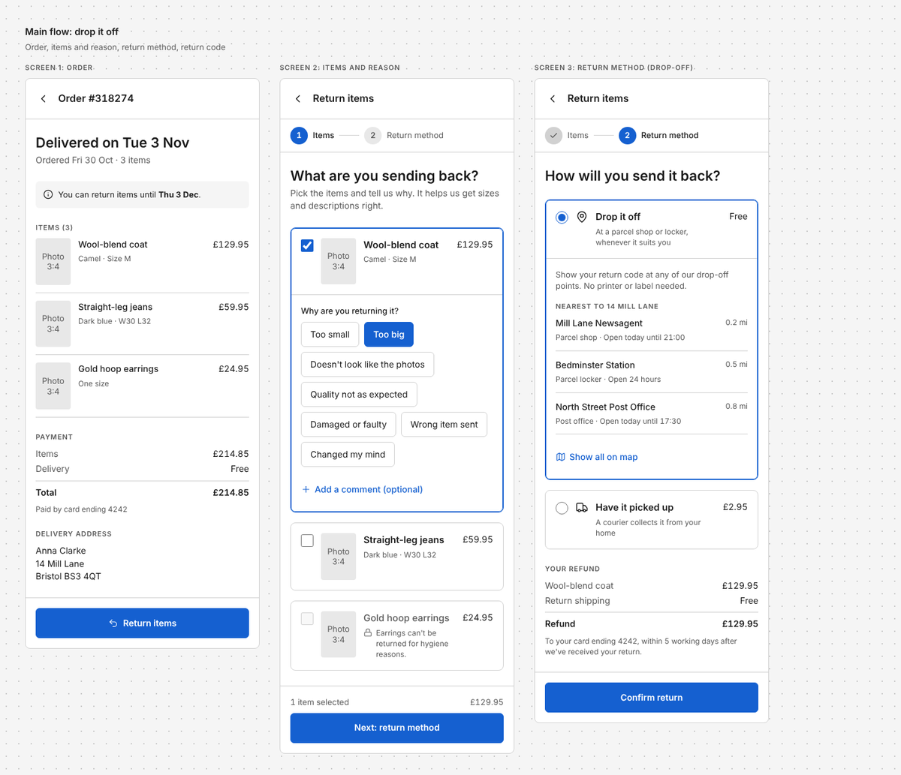
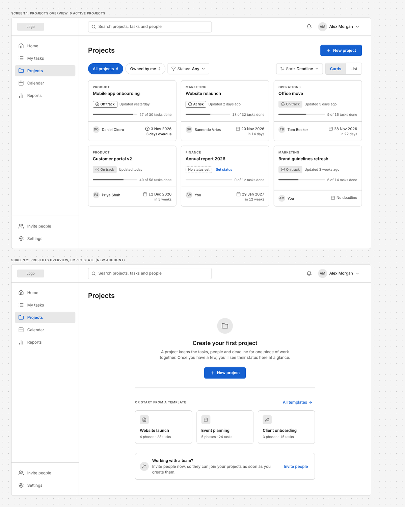
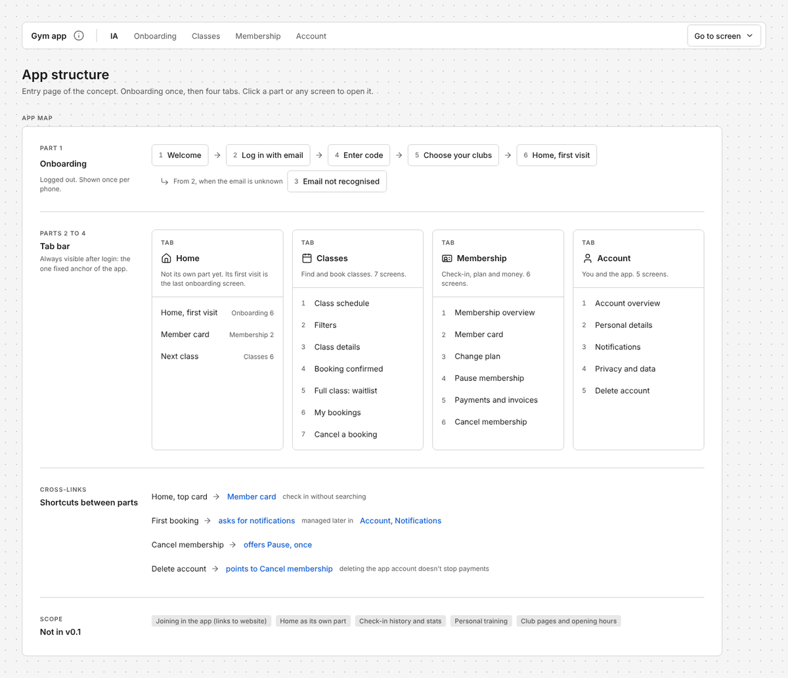

Wireframe skill
Examples
Each example was made by Claude with the wireframe skill from a single prompt. Open one to see the full wireframe; hover over buttons and cards to see what's clickable.

Mobile flow
Return flow for a clothing webshop app
From the order to a confirmation with a return code, for pickup and for drop-off.
Open wireframe
Desktop page
Projects overview with its empty state
The filled overview and a brand-new account with no projects, side by side.
Open wireframe
Concept site
A gym chain's new app
A structure page plus one page per part, connected by one menu bar.
Open concept site